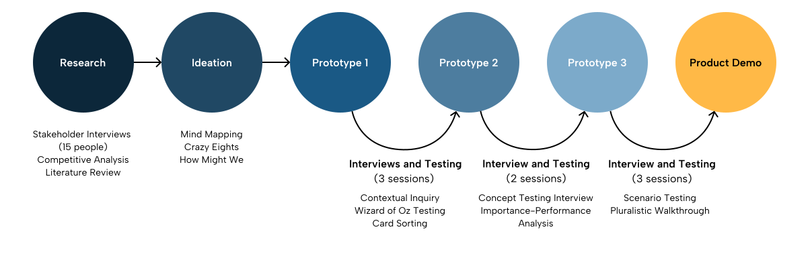

The vision
As robots move from factory floors to hospitals and offices, the need for a central management system becomes critical. Robotforce is our answer: an AI-native command center that allows human supervisors to monitor, intervene, and collaborate with autonomous robot fleets through Slack.
Key Features
Incident Response and Monitoring
Robot fleet managers can investigate critical incidents reported by agents (e.g., fire at a power plant), reviewing AI-detected footage, a reasoning and action thread showing the agent timeline, and a mapped location.
Digital Twin
A real-time 3D digital twin of the site, visualizing robot positions, active zones, and system alerts. This interface helps monitor operations spatially and identify anomalies or hotspots quickly. All made in Blender!
Agentic Intervention
Users can collaborate directly with a robot on a specific issue. They can discuss root causes, align on next steps, and add people to the conversation—all within a dedicated resolution thread.
Fleet Impact
Upon expanding a graph, supporting text explains the data. The built-in thread panel enables real-time team collaboration, letting users tag colleagues, add context, or propose next steps directly alongside the data. Agents join the conversation when an action is proposed.
Design Process
Testing the limits of autonomy.

Our process involved over 15 stakeholder interviews and several rounds of "Wizard of Oz" testing to understand where humans wanted more control vs. where they trusted the AI. We used "Crazy Eights" to quickly ideate on how to represent 3D robot movement within a 2D chat bubble.

Design insight
3D spatial data is hard to grasp in text. By integrating Blender-built digital twins into Slack, we allowed supervisors to see exactly what the robot sees, providing the necessary "spatial context" to make split-second intervention decisions.
Impact
Toward Dreamforce 2025.
Robotforce is currently a high-priority project targeting a major reveal at Dreamforce 2025. It represents the next frontier of Salesforce's "Agentforce" vision — moving beyond software agents to physical, autonomous coworkers.
Reflection
Robotforce pushed me to think beyond traditional screen-based UX. Designing for physical agents requires a deep empathy for both the human supervisor and the robot's "worldview." It’s taught me that the future of AI isn't just about answering questions — it's about acting in the physical world alongside us.